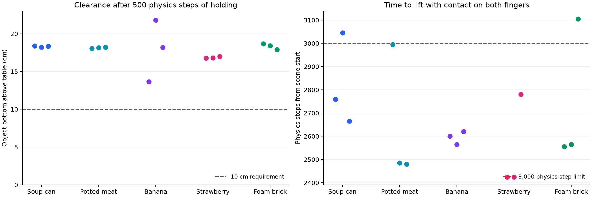
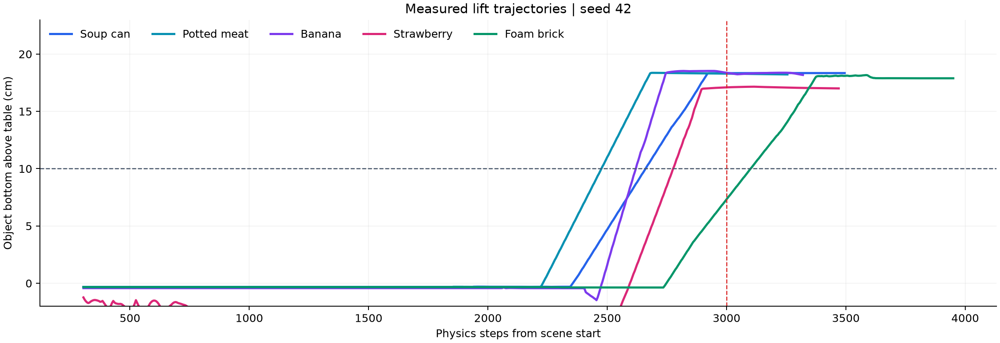

CS4278 / CS5478 · Pick, Navigation, Reach · 26 October 2026
From contact geometry
to a stable lift.
A lecture-based antipodal grasping pipeline, executed with the Fetch robot in PyBullet. Five provided YCB objects, three fixed seeds, fifteen measured trials.
13/15
Full evaluation pass
10 cm clearance, lift by 3,000 physics steps, stable hold
15/15
Sustained lift and hold
500 physics steps above 10 cm with bilateral finger contact
13.7–21.8 cm
Final table clearance
Measured at the bottom of the object's collision AABB
How the method follows the lectures
01 · PROPOSE
Surface contacts
Enumerate pairs from 1,024 sampled surface points and outward normals. Reject pairs wider than the 92 mm planning aperture.
02 · FILTER
Both friction cones
For d = (q − p)/‖q − p‖, require −nₚ·d and nᵩ·d > 1/√(1+μ²), with a positive margin. Here μ = 0.5.
03 · PLAN
Reachable approach
Rank geometric candidates, solve damped Jacobian IK, and check joint-space edges. Use RRT-Connect and shortcutting when direct transit is blocked.
04 · EXECUTE
Close, lift, hold
Follow a Cartesian approach, close the fingers at up to 60 N each, lift at least 19 cm with extra clearance for long objects, then measure contact and drift.
Lecture references: Week 3 Grasping, pp. 13 and 46; Week 3&4 Grasping, p. 49; Week 5 Motion Planning, pp. 49 and 62–65. Ranking uses a geometric heuristic, not wrench-hull epsilon quality. Two ideal point contacts do not establish arbitrary six-dimensional force closure; finite finger pads provide the simulated contact behavior.
Measured benchmark

Seeds: 0, 7, 42. The strict pass counts a lift only while both fingers contact the object. Holding requires at least 50 consecutive control steps above 10 cm with less than 20 mm relative translation drift; the experiment records 100 control steps (500 physics steps).
13 of 15 trials meet every measured threshold, including final clearance. 15 trials sustain the lift for the full observation period. Maximum measured hold drift is 3.34 mm. Maximum robot penetration into the table or maze during execution is 0.00 mm.
| Object | Seed | Final clearance | First lift, physics steps | Hold, physics steps | Max hold drift | Outcome |
|---|
| Soup can | 0 | 18.4 cm | 2760 | 500 | 0.57 mm | PASS |
| Soup can | 7 | 18.2 cm | 3045 | 500 | 0.65 mm | TIMING MISS |
| Soup can | 42 | 18.3 cm | 2665 | 500 | 0.16 mm | PASS |
| Potted meat | 0 | 18.0 cm | 2995 | 500 | 1.28 mm | PASS |
| Potted meat | 7 | 18.1 cm | 2485 | 500 | 2.26 mm | PASS |
| Potted meat | 42 | 18.2 cm | 2480 | 500 | 1.03 mm | PASS |
| Banana | 0 | 13.7 cm | 2600 | 500 | 3.34 mm | PASS |
| Banana | 7 | 21.8 cm | 2565 | 500 | 1.21 mm | PASS |
| Banana | 42 | 18.2 cm | 2620 | 500 | 0.62 mm | PASS |
| Strawberry | 0 | 16.8 cm | 2425 | 500 | 0.66 mm | PASS |
| Strawberry | 7 | 16.8 cm | 2425 | 500 | 0.98 mm | PASS |
| Strawberry | 42 | 17.0 cm | 2780 | 500 | 0.90 mm | PASS |
| Foam brick | 0 | 18.7 cm | 2555 | 500 | 1.14 mm | PASS |
| Foam brick | 7 | 18.4 cm | 2565 | 500 | 1.25 mm | PASS |
| Foam brick | 42 | 17.9 cm | 3105 | 500 | 2.60 mm | TIMING MISS |
These are development trials on provided objects and selected seeds, not the course's hidden evaluation. Five physics steps run inside each env.step call; both counts are retained in the raw data. Timing begins at scene start and includes settling and base approach.
A replay you can present
Banana, seed 7. Frames come from the actual physics run. No object attachment, teleportation, or contact constraints are used during execution. Planning queries temporarily change robot joint states and restore the complete simulator state before execution.
The lift, over time

A short explanation for tomorrow
“I implemented antipodal grasp generation from point clouds and surface normals. I use the lecture's friction-cone condition to reject unstable contact pairs, then check whether the Fetch arm can reach and approach the remaining candidates without collisions. The robot closes its fingers, lifts the object, and holds it using simulated contact forces.
Across five provided objects and three seeds, 15 out of 15 trials sustained the lift for the full holding period, and 13 met the complete timing-and-stability test. The final clearance was 13.7 to 21.8 centimetres. I have logged every trial, including failures. The next step is to broaden the grasp approach directions and integrate carrying and navigation.”
Reproduce and inspect
From the project folder:
.venv\Scripts\python.exe controller.py --headless --objects 2 4 5 6 14 --seeds 0 7 42
GUI demo: .venv\Scripts\python.exe controller.py --objects 5 --seeds 42
Summary CSV · Complete JSON metrics · Tested dependency versions
Scope: pick-only, top-down grasps, a fixed base staging location, known full surface point clouds, and the original static scene. Collision checking covers the table, maze, and non-adjacent robot links at discrete configurations. Carried-object collision geometry, navigation, noisy partial perception, orientation drift scoring, and a six-dimensional wrench-hull test are future work. PyBullet's default object and pad friction are retained; μ=0.5 is the proposal-filter assumption, not an identified physical friction coefficient. The pass field is a local measurement of lift, timing, and hold; final end-effector pose errors are reported separately.